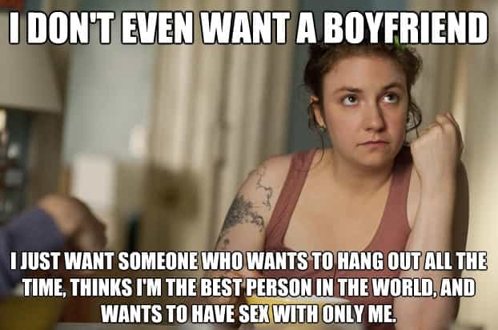
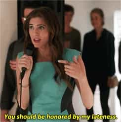

< < < Back
HBO’s “Girls” Heralds The Cultural Decline Of American Women – Return Of Kings
Imagine a masterful artist painting a picture of something horribly ugly, perhaps a nude Oprah, or two Chihuahuas fucking. No matter how well executed the painting, it would be difficult to look at because of the ugliness of the subject matter. That analogy sums up the HBO television show “Girls.” While the show perceptively portrays the millennial generation and the modern Western woman, it is painful to see in its full repulsiveness. If I ever again feel the need to explain why I hate American females, I will tell them to watch the first two episodes of this show.
To faithfully observe the once great country of America descends into complete cultural and economic oblivion, I have dutifully resolved to watch this show. It created a buzz when it first aired in Spring 2012 because of the “gritty” writing, as well as garnering praise from some feminists because it showed women “making mistakes without judgement.” Apparently the overwhelming shabbiness of the characters’ personalities and decisions was lost on them. Other feminists panned the show for its focus on sex, but methinks they doth protest too much; I suspect they were uncomfortable with the accurate picture it rendered of the their perverse philosophy’s logical conclusion.
Lena Dunham, who wrote the show and stars as the main character says she “reveres Sex and the City as much as anyone of my generation” and it shows through her character’s actions. “Girls” is very insightful and relevant; it could well be used as a case study when future historians dissect America’s collapse. The red pill man will find himself nodding with [Jack’s] complete lack of surprise as “Girls” delivers situation after situation to perfectly illustrate what he already knew from the manosphere.
The Premise
“Girls” follows the lives of four women in their twenties in New York City, “busy trying to become who they are.” They are well described as girls in some ways, as they lack maturity, but in other ways it falls short. While they have the negative attributes we associate with young children, like selfishness and emotional volatility, they have none of the innocence that can be so endearing.
Hannah
The show’s protagonist is Hannah, a neurotic, self-loathing, twenty five year old who aspires to be a writer. Although she claims to be working on a series of “personal essays” for a book, she has only written a few pages in the several years since she graduated college. Confused about what she wants to do with her life, she exists off the allowance her parents give her while initially refusing to take a service job that would be beneath her.
In the first episode, her parents cut her off financially. The entitled Hannah throws a tantrum, but her parents hold firm. If only that was realistic! Most of today’s “helicopter” parents wouldn’t dream of doing that. Hannah is conscious of being overweight, even though her BFF tries to persuade her otherwise in the insincere manner that girls use to reassure each other. She is covered with ugly tattoos of illustrations from children’s books. When her boyfriend asks about them, she says that she got them in high school because she gained weight and “felt out of control of her body.” Fat acceptance is a theme in the show, with many shots of Hannah’s body, and scenes of the girls consuming high calorie snacks as a form of therapy or for no reason at all.
Hannah’s love interest is Adam, who has a funny looking face, a weird way of talking, and strange mannerisms in general with strange sexual tastes to match. Despite all of this, Adam is an excellent example of how game so often trumps any other factor. He doesn’t ask Hannah about her problems, and ignores her for weeks following a fuck session. He takes whatever he wants from Hannah sexually, with the result that Hannah can’t get enough of him. Of course Adam uses Hannah, but she selfishly objectifies him as well. His game is so good that I wondered why he even bothered with the very homely Hannah, but I assume he’s one of those players who values quantity above quality.
In one episode, Hannah receives a late night dick picture text from him, and then a quick follow up text that reads, “sorry that wasn’t for you.” Clearly he has a harem, and Hannah is just one of many. In a twist that is improbable but not impossible, he becomes more beta towards the end of the first season as he commits to the ugly and annoying Hannah. Predictably, Hannah starts to lose interest in him.

Marnie
Hanna lives with her best friend Marnie in Brooklyn. Despite ostensibly being BFFs, they are contemptuous of each other behind each others backs. She has a textbook beta boyfriend named Charlie whom she (needless to say) despises. Marnie dumps Charlie, but then becomes obsessed with him when he gets a new, more pleasant girlfriend. Now that Charlie has “hand” over her, he becomes tantalizingly close to being an alpha, but can’t quite realize his potential. A guy like Charlie is a prime candidate for either finding his way to the manosphere and going on to better things or organically maturing into alphadom.

Shoshanna
Shoshanna is a Jewish American Princess who is high strung and shy. Her part in the show is small, serving mainly as comic relief. She is determined to lose her virginity but is thwarted by her awkwardness and naïveté. Shoshanna wants to be a slut, but hasn’t figured out how just yet, as of the first season.
Jessa
Jessa is a British girl and is Shoshanna’s cousin. She’s traveling the world at random (that piece of information should have your slut sensor going crazy) and is staying in New York City temporarily. In one outburst, she says that she wants to have many biracial children by a variety of men. She is supposed to be a seductress, but ends up as the most repulsive character.
Early on, she finds she is pregnant by a fellow traveller from Europe, and schedules an appointment for an abortion. She misses the appointment because she is busy banging a random boy who wanders into the bar where she is getting her pre-abortion White Russian. At one point, a former lover shows up in New York City and declares his love for her. She takes him back to the apartment she shares with Shoshanna and lets him have sex with her from behind as she hangs out the window screaming. As soon as they finish, she scorns him and he slinks off in shame. “I cannot be smote! I am unsmotable!” she exclaims to Shoshanna afterwards. Seeing her strut around the streets of New York with her muffin top looking for the next sexual adventure is sickening, but entirely realistic.
There are broader themes in the show that apply to the millennial generation, like dealing with self absorption, narcissism, and the overall shabbiness of so many of my peers. One cringes at their pettiness as they deal with their first world problems. The observer of America’s latter days will find all of this interesting as well, but the exposé of feminism’s false promises are where the show truly excels (whether these astute observations of feminism’s outcomes, the millennial generation, etc. are intentional I am unsure). The characters crave authenticity, but they are already authentic pieces of shit.
There were times my stomach churned as I watched the first season of “Girls,” much as it does during my travels through the American wastelands. The truth is often painful to see, and this show tells it incisively. I encourage red pill men who take an active interest in fighting feminism to watch the first two or three episodes of this show. Anything more than that would be too painful, as it reflects American reality all too well. During Jessa’s surprise wedding, Shoshanna blurts out, “Everyone is a dumb whore!” Truer words were never spoken.
Read More: All Girls Are Spoiled Children


{kind=link}
{kind=link}
{kind=link}
{kind=link}
{kind=link}